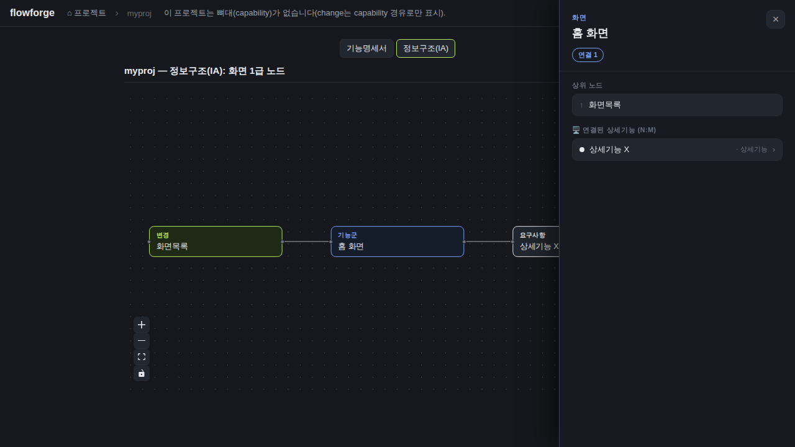
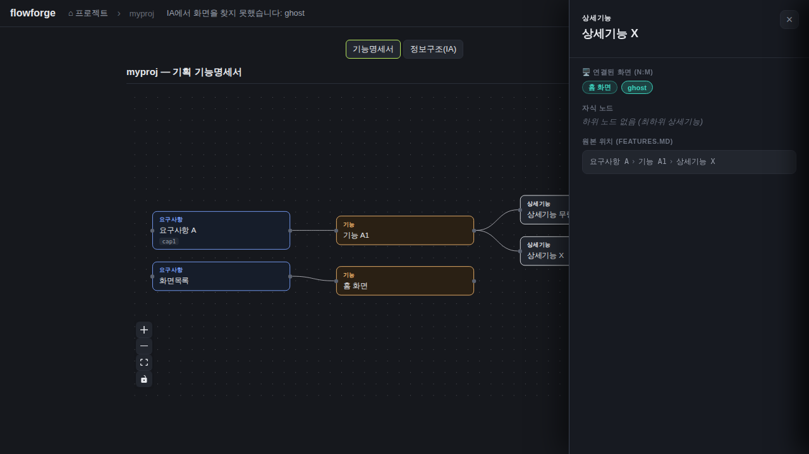
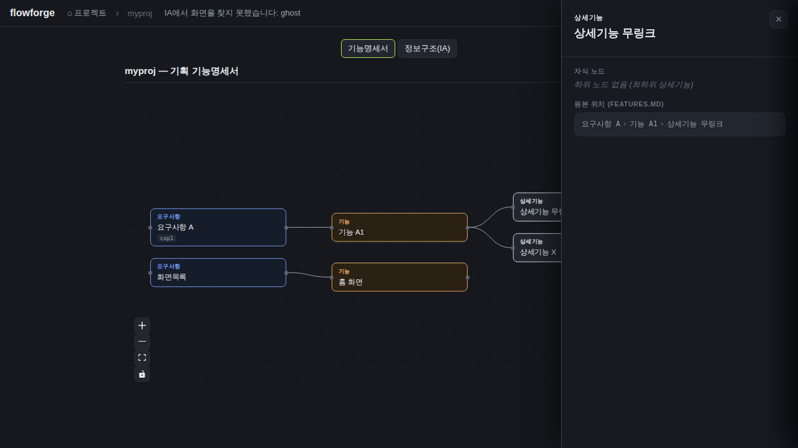

검증일: 2026-07-07T09:20:56+09:00 · 환경: web(적용: Vite+React, vite.config.ts /api 프록시·App.tsx 상태전이) 실행. server(적용: npm run test --workspace server, planningIaBuilder.ts) 실행. android/ios(적용 불가: RN/네이티브 소스 없음, package.json workspaces=shared·server·web). · run: run-20260707-0920
PASS 3 · FAIL 0 · 검증 안 함 0 · SKIPPED 0
| Requirement | Scenario | Layer | 검증 수단 | 탐지 근거(basis) | 결과 | 증거 |
|---|---|---|---|---|---|---|
| 화면 칩 클릭은 IA 뷰의 해당 화면으로 딥링크한다 | 칩 클릭 → IA 탭 + 해당 노드 선택 (기능명세 패널 닫힘) | web | 실픽셀: 격리 픽스처(myproj)에서 상세기능 X 패널의 '홈 화면' 칩 클릭 → 정보구조(IA) 탭 전환·홈 화면 IA 노드 선택·상세 패널 오픈·기능명세 패널 닫힘 확인. 매칭 원천(screenId)은 server planningIaBuilder 단위테스트로 이중검증. | web: vite.config.ts(/api→8811 프록시)·App.tsx selectScreenInIa(setPlanTab('ia')+setSelectedIa+setSelectedFeature(null)). server: planningIaBuilder.test.ts 'screenId 딥링크 매칭 원천'(login/home 세팅) — 336 테스트 PASS 포함. | ✓ PASS |  |
| 화면 칩 클릭은 IA 뷰의 해당 화면으로 딥링크한다 | 매칭 실패는 무해 (IA 트리에 없는 화면 id 칩 클릭 → 탭 전환 없이 상태바 안내만) | web | 실픽셀: 상세기능 X 패널의 'ghost' 칩(IA 노드 없음) 클릭 → 탭 전환 없음(기능명세서 유지)·상태바 'IA에서 화면을 찾지 못했습니다: ghost' 표시·화면 정상. App.tsx selectScreenInIa의 !found 분기(setStatus+early return, setPlanTab 미도달) 실측. | web: App.tsx:352-355 !found 분기(setStatus 후 return; setPlanTab/setSelectedIa는 return 뒤라 무매칭 시 미실행). planning-ia 응답에 ghost screenId 노드 없음(curl JSON 확인). | ✓ PASS |  |
| 화면 칩 클릭은 IA 뷰의 해당 화면으로 딥링크한다 | 링크 없는 상세기능은 기존대로 (연결화면 없는 상세기능 패널 → 화면 섹션 생략, 회귀 없음) | web | 실픽셀: 연결화면 링크 없는 '상세기능 무링크' 패널 오픈 → '연결된 화면' 섹션 자체가 없음(빈/깨진 섹션 아님)·패널 정상. 딥링크 추가(칩 span→button)로 인한 무링크 경로 회귀 없음 확인. | web: FeatureDetailPanel.tsx 화면 섹션은 screens 존재 시에만 렌더(무링크 detail은 screens 없음). features.md '상세기능 무링크'에 <!-- screens --> 없음. | ✓ PASS |  |
| Requirement | null | 빈값 | 잘못된타입 | 경계값 | 에러경로 | 동시성 | 대량 | 특수문자 | 판정 |
|---|---|---|---|---|---|---|---|---|---|
| 화면 칩 클릭은 IA 뷰의 해당 화면으로 딥링크한다 | ✓ | ✓ | N/A | ✓ | ✓ | N/A | N/A | N/A | ✓ 충분 |
✓=covered · N/A=해당없음(사유 hover) · ✗=missing. happy-path만이면 검증 불충분 → 최종 FAIL 차단.
| Layer | 상태 | ran | passed | failed | 근거/사유 |
|---|---|---|---|---|---|
| web | ✓ PASS | 3 | 3 | 0 | 빌드·타입체크·린트 PASS(exit 0). 3개 UI 시나리오 실픽셀 스크린샷으로 본체 재확인(1a/1b/2/3). |
| server | ✓ PASS | 336 | 336 | 0 | 336 passed/336 total, 회귀 0(기존 333+신규 3). 딥링크 매칭 원천(D-1/D-4) 서버측 근거 PASS. |
| android | – SKIPPED | 0 | 0 | 0 | 적용 불가(안드로이드 레이어 부재). |
| ios | – SKIPPED | 0 | 0 | 0 | 적용 불가(iOS 레이어 부재, macOS 필요). |
✓ PASS 통과
archiveGate.open = true (PASS일 때만 true). verify.json이 이 값을 archive 게이트에 전달.
{kind=link}
{kind=link}
{kind=link}